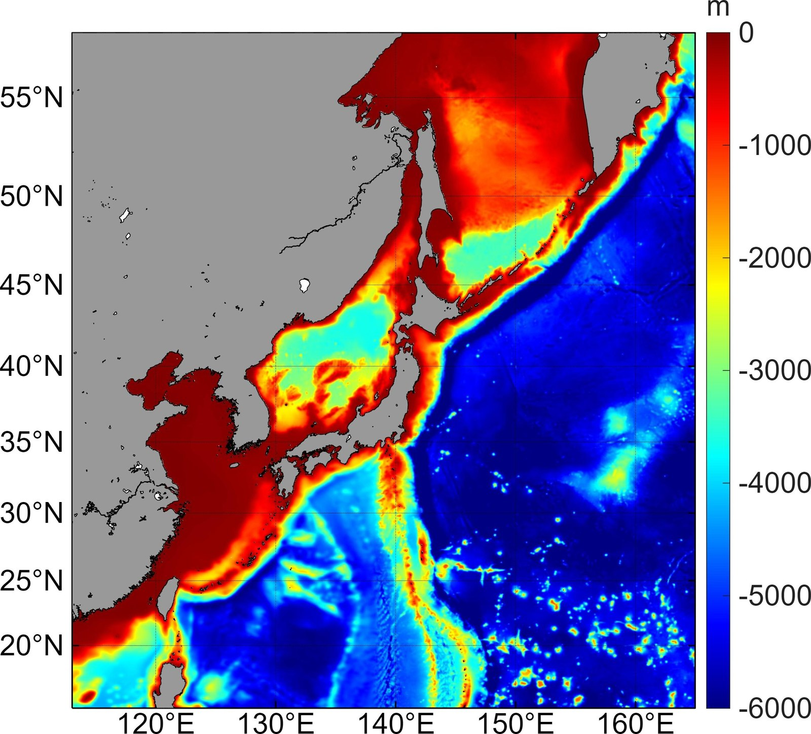

핵심 모형 소개로 돌아가기
핵심 모형 소개로 돌아가기
수평 해상도
1/20°
약 5.5 km 격자
수직 층
30층
sigma 좌표계
모의 기간
1983–2100
과거 재현 + 미래 전망
미래 시나리오
SSP 4종
1-2.6 · 2-4.5 · 3-7.0 · 5-8.5
모델 영역 및 수심

북서태평양 1/20도 모델 영역 및 수심 (단위: m)
그림을 클릭하면 크게 볼 수 있습니다.
모델 영역
- 경도
- 113.0310 – 164.9690 °E
- 위도
- 15.0230 – 57.9768 °N
황해·동중국해·동해를 포함한 한반도 주변 해역과 오호츠크해, 쿠로시오 해류역을 포함하는 북서태평양 일부를 1/20° 격자로 모의합니다.
지형 자료
GEBCO2021, BADA2019
모의 기간 및 미래 전망 시나리오
19832014 | 20152100
미래 전망 시나리오
SSP1-2.6
SSP2-4.5
SSP3-7.0
SSP5-8.5
모델 상세 사양
| 모델 구성 | |
|---|---|
| 수치 모델 | Regional Ocean Modeling System (ROMS) |
| 생지화학 모듈 | bio_Fennel (Fennel et al., 2006; Fennel et al., 2008) |
| 수행 기관 | 전남대학교 해양학과 해양수치모델연구실 |
| 모델 영역 | 113.0310–164.9690 °E, 15.0230–57.9768 °N |
| 수평 해상도 | 1/20° |
| 수직 층 개수 | sigma 층 30개 |
| 수직 혼합 기법 | K-profile parameterization scheme (KPP) |
| 모의 설정 | |
| 모의 기간 | historical: 1983년–2014년 projection: 2015년–2100년 |
| 미래 전망 시나리오 | SSP1-2.6, SSP2-4.5, SSP3-7.0, SSP5-8.5 |
| 입력 자료 | |
| 지형 자료 | GEBCO2021, BADA2019 |
| 해양 초기 조건 | IPSL-CM6A-LR 1월 평균 자료 |
| 해양 경계 조건 | IPSL-CM6A-LR 월평균 자료 |
| 대기 경계 조건 | IPSL-CM6A-LR 일평균 자료 |
| 담수 유입 | 동북아시아 25개 강물 자료 |
특이사항
조석 강제력 적용
해양 측면 경계에서 조석 강제력을 적용합니다.
편향 보정 적용
해양 초기 조건과 경계 조건에 편향 보정을 적용합니다.
참고문헌
Fennel, K., Wilkin, J., Levin, J., Moisan, J., O'Reilly, J., & Haidvogel, D. (2006). Nitrogen cycling in the Middle Atlantic Bight: Results from a three‐dimensional model and implications for the North Atlantic nitrogen budget. Global Biogeochemical Cycles, 20(3).
Fennel, K., Wilkin, J., Previdi, M., & Najjar, R. (2008). Denitrification effects on air‐sea CO2 flux in the coastal ocean: Simulations for the northwest North Atlantic. Geophysical Research Letters, 35(24).